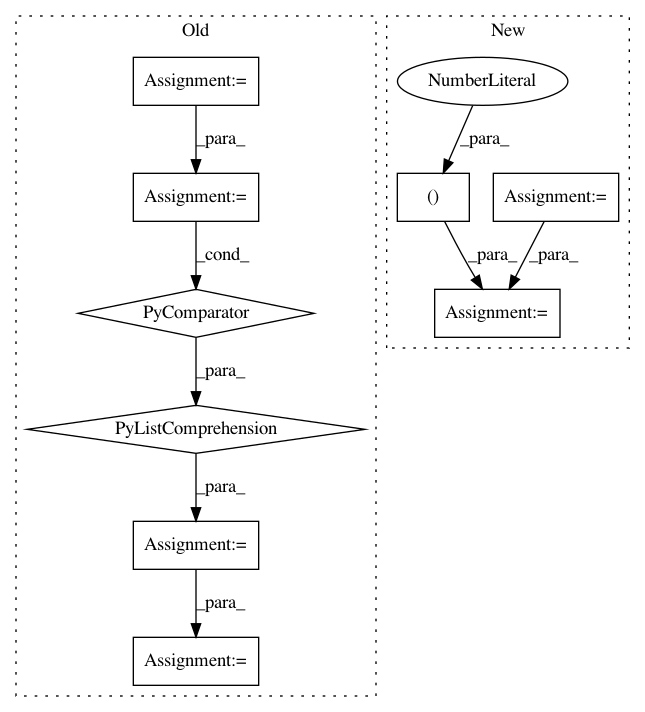

c128615c048f69e532714201e1e5b4e1c1663d14,examples/doa_algorithms.py,,,#,55
Before Change
R = pra.circular_2D_array([0, 0], 12, 0., 0.15)
// propagation filter bank
propagation_vector = -np.array([np.cos(azimuth), np.sin(azimuth)])
delays = np.dot(R.T, propagation_vector) / c * fs // in fractional samples
filter_bank = pra.fractional_delay_filter_bank(delays)
// we use a white noise signal for the source
x = np.random.randn((nfft // 2 + 1) * nfft)
// convolve the source signal with the fractional delay filters
// to get the microphone input signals
mic_signals = [ fftconvolve(x, filter, mode="same") for filter in filter_bank ]
// Now add the microphone noise
for signal in mic_signals:
signal += np.random.randn(*signal.shape) * 10**(- SNR / 20)
////////////////////////////////////////////////////////////////
// Compute the STFT frames needed
X = np.array([
pra.stft(signal, nfft, nfft // 2, transform=np.fft.rfft).T
for signal in mic_signals ])
After Change
// Location of original source
azimuth = 61. / 180. * np.pi // 60 degrees
distance = 3. // 3 meters
//////////////////////////////////////////////
// algorithms parameters
SNR = 0. // signal-to-noise ratio
c = 343. // speed of sound
fs = 16000 // sampling frequency
nfft = 256 // FFT size
freq_bins = np.arange(5, 60) // FFT bins to use for estimation
// compute the noise variance
sigma2 = 10**(-SNR / 10) / (4. * np.pi * distance)**2
// Create an anechoic room
room_dim = np.r_[10.,10.]
aroom = pra.ShoeBox(room_dim, fs=fs, max_order=0, sigma2_awgn=sigma2)
// add the source
source_location = room_dim / 2 + distance * np.r_[np.cos(azimuth), np.sin(azimuth)]
source_signal = np.random.randn((nfft // 2 + 1) * nfft)
In pattern: SUPERPATTERN
Frequency: 3
Non-data size: 9
Instances
Project Name: LCAV/pyroomacoustics
Commit Name: c128615c048f69e532714201e1e5b4e1c1663d14
Time: 2018-04-27
Author: fakufaku@gmail.com
File Name: examples/doa_algorithms.py
Class Name:
Method Name:
Project Name: matplotlib/matplotlib
Commit Name: 0b92b4f5530fee68432f13075a1ddc866748f9d1
Time: 2020-11-20
Author: anntzer.lee@gmail.com
File Name: examples/showcase/firefox.py
Class Name:
Method Name: svg_parse
Project Name: PyMVPA/PyMVPA
Commit Name: 5bc47f908692c2c46173eb2451960816b6d0b58e
Time: 2010-01-10
Author: psederberg@gmail.com
File Name: mvpa/clfs/glmnet.py
Class Name: _GLMNET
Method Name: _predict